“分数大小的比较”教学设计 [1]
教学内容：六年制小学数学第十册第59-60页的例3、例4及练习十六
教学要求：1.通过比较分数的大小，使学生对分数的意义有更清楚的认识。
2.掌握分母相同或分子相同的分数大小比较的算理，并会比较它们的大小。
3.培养学生分析、比较、类推、概括的能力。
教学重点：掌握同分母或同分子的两个分数大小比较的算理，并会比较它们的大小。
教学难点：理解分子相同，分母不同的两个分数大小比较的算理。
教具：投影仪、幻灯片、小黑板、录音机等。
教学过程
一、基础训练
1.把一块蛋糕平均分成4分，每份是它的（）。
2.（1）
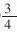
表示把单位“1”平均分成了（）份，取了其中的（）份。（2）
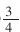
的分数单位是（），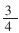
里面有（）个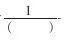
。（3）1个
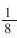
是（），3个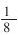
是（）。二、导入新课
以前我们在第七册通过看图初步学习了比较分母相同的两个分数的大小和分子是1的两个分数的大小。这节课我们进一步学习分数大小的比较，主要是比较分母相同或分子相同的分数大小。只要掌握了算理，就很容易比较。我相信同学们一定能够学会，大家有信心吗？
板书：分数大小的比较
三、进行新课
1.教学例3
（1）比较
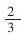
和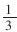
的大小，并说一说为什么？（2）看书：a通过观察图形，验证结果的正确性。b理解算理：
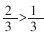
，因为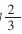
是2个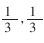
是1个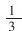
，2个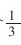
比1个大，所以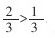
。（3）看图比较
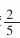
和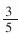
的大小，并说一说为什么？（4）想一想：上面每组分数中的两个分数有什么共同的地方？（每组中两个分数的分母相同，也就是分数的单位相同）那么，分母相同的两个分数怎样比较大小？引导学生说出要看分子，分子大的就表示取的份数多（也就是包含的分数单位多），所以分母相同的分数，分子大的分数比较大。
板书：分母相同的两个分数，分子大的分数比较大。
（5）练一练：在〇里填上“＞”或“＜”。（练习十六第2题）
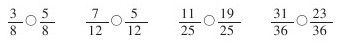
（6）类推：比较
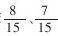
和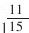
的大小。2.教学例4
（1）五（2）班40人参加义务劳动，平均分成2组，每组（）人；平均分成4组，每组（）人；平均分的组越多，每组人数越（）；平均分的组越少，每组人数越（）。
（2）①出示
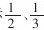
的直观图形。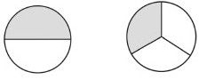
②用分数表示图中的阴影部分。
③看图想一想；说出每一份的大小与平均分的份数的多少有什么关系。（平均分的份数越多，每一份反而越小；平均分的份数越少，每一份反而越大。）
④看图比较
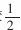
和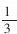
的大小。⑤比较
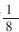
和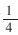
的大小，并说一说为什么？（3）看图比较
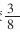
和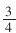
这两个分数的大小。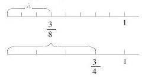
推理：因为1个
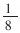
小于1个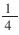
，2个18小于2个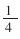
，3个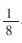
小于3个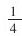
，所以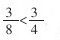
。（4）想一想，上面每组中的两个分数有什么共同的地方？（两组分数的分子相同，分母不同）分子相同的两个分数怎样比较大小？引导学生说出要看分母，分母大的就是平均分的份数多，每一份反而小（也就是分数单位小），所以分子相同的两个分数，分母小的分数比较大。
板书：分子相同的的两个分数，分母小的分数比较大。
（5）练一练：在〇里填上“＞”或“＜”。（练习十六第3题）
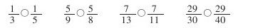
（6）类推：比较
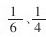
和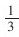
的大小。3.练习：（1）根据图意在□里写出分数，并且在〇里填上“＞”或“＜”（练习十六第1题）（图略）
（2）看图完整地说出分母相同或分子相同的分数大小比较的方法。
（3）记忆方法。
四、反馈练习（让学生边填边说）
1.在下面的〇里填上“＞”或“＜”。（练习十六第4题）
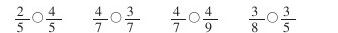
2.把下面每组中的三个分数，按照从大到小的顺序排列起来。
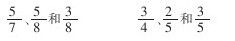
3.一块地，用铁牛牌拖拉机要8小时耕完，用丰收牌拖拉机要10小时耕完，3小时两种拖拉机各能耕这块地的几分之几？那一种耕得多？（练习十六第6题）
*游戏——找朋友（放录音）
选出能同
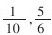
比较大小的分数，并比较它们的大小。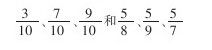
4.先求出下面每组中两个除式的商，再比较它们的大小。
2÷5和4÷5 4÷7和4÷8
5.在括号内填上适当的数。（学生分组讨论）
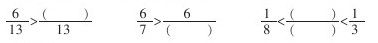
五、课堂小结
这节课，我们学习的是分母相同或分子相同的分数大小的比较，同学们学得很好。那么，分子、分母都不相同的分数，如
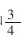
和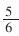
怎样比较大小呢？这是我们后面将要学习的内容。